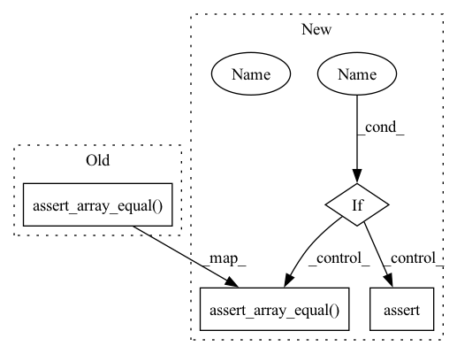

Pattern ID :11385
Before Change
crafted_doc = reader.craft(array_bytes, 0)
assert crafted_doc["blob"].shape[0] == size
np.testing.assert_array_equal( crafted_doc["blob"], sample_array)
def test_bytes_reader_int_type():
size = 8
sample_array = np.random.rand(size).astype("int")After Change
reader = ArrayBytesReader(as_type=as_type)
crafted_docs = reader.craft(array_bytes if single else [array_bytes, array_bytes])
if single :
assert crafted_docs["blob"].shape[0] == _size
np.testing.assert_array_equal(crafted_docs["blob"], sample_array)
else:
assert len(crafted_docs) == 2
for crafted_doc in crafted_docs:
assert crafted_doc["blob"].shape[0] == _size
np.testing.assert_array_equal( crafted_doc["blob"], sample_array)
@pytest.mark.parametrize("data_type, reader_type", [("float32", "float64")])
def test_bytes_reader_wrong_type(data_type, reader_type):In pattern: SUPERPATTERN
Frequency: 3
Non-data size: 4
Instances Fragment ID: 38837984
Project Name: jina-ai/jina-hub
Commit Name: cd26c020c86cd5c620b3ab1aae6d36f11bf453eb
Time: 2021-03-15
Author: joan.martinez@jina.ai
File Name: crafters/numeric/ArrayBytesReader/tests/test_arraybytesreader.py
M Class Name: AnonimousClass
N Class Name: AnonimousClass
M Method Name: test_bytes_reader(2)
N Method Name: test_bytes_reader(0)
M Parent Class:
N Parent Class:
M File Name: crafters/numeric/ArrayBytesReader/tests/test_arraybytesreader.py
N File Name: crafters/numeric/ArrayBytesReader/tests/test_arraybytesreader.py
M Start Line: 11
M End Line: 18
N Start Line: 13
N End Line: 30
Before Change
proposal.augment_names = ["e_1", "e_2"]
AugmentedFlowProposal.augmented_prior(proposal, x)
np.testing.assert_array_equal(x["e_1"], mock.call_args_list[0][0][0])
np.testing.assert_array_equal( x["e_2"], mock.call_args_list[1][0][0])
@pytest.mark.parametrize("marg", [False, True])
def test_log_prior(proposal, x, marg):After Change
proposal.marginalise_augment = marg
proposal.augment_names = ["e_1", "e_2"]
log_prior = AugmentedFlowProposal.augmented_prior(proposal, x)
if marg :
assert log_prior == 0
else:
np.testing.assert_array_equal(x["e_1"], mock.call_args_list[0][0][0])
np.testing.assert_array_equal( x["e_2"], mock.call_args_list[1][0][0])
@patch("nessai.proposal.flowproposal.FlowProposal.log_prior", return_value=1)
def test_log_prior(mock_prior, proposal, x): Fragment ID: 38837985
Project Name: mj-will/nessai
Commit Name: 693fda5f8a93797c2dfaaa1abd98cbbaf4a1f0ea
Time: 2021-04-12
Author: m.williams.4@research.gla.ac.uk
File Name: tests/test_proposal/test_augmented.py
M Class Name: AnonimousClass
N Class Name: AnonimousClass
M Method Name: test_augmented_prior(4)
N Method Name: test_augmented_prior(3)
M Parent Class:
N Parent Class:
M File Name: tests/test_proposal/test_augmented.py
N File Name: tests/test_proposal/test_augmented.py
M Start Line: 129
M End Line: 131
N Start Line: 126
N End Line: 137
Before Change
for nsp, v in zip(
config.NON_SAMPLING_PARAMETERS, config.NON_SAMPLING_DEFAULTS
):
np.testing.assert_array_equal( array[nsp], v * np.ones(n))
def test_empty_structured_array_dtype():
Assert the correct default values are used when specifying the dtypeAfter Change
for nsp, v in zip(
config.NON_SAMPLING_PARAMETERS, config.NON_SAMPLING_DEFAULTS
):
if non_sampling_parameters :
np.testing.assert_array_equal( array[nsp], v * np.ones(n))
else:
assert nsp not in array.dtype.names
def test_empty_structured_array_dtype(non_sampling_parameters): Fragment ID: 38837989
Project Name: mj-will/nessai
Commit Name: d43909486cc968031de03eecdb3c5107adf96433
Time: 2023-01-20
Author: m.williams.4@research.gla.ac.uk
File Name: tests/test_livepoint.py
M Class Name: AnonimousClass
N Class Name: AnonimousClass
M Method Name: test_empty_structured_array_names(1)
N Method Name: test_empty_structured_array_names(0)
M Parent Class:
N Parent Class:
M File Name: tests/test_livepoint.py
N File Name: tests/test_livepoint.py
M Start Line: 116
M End Line: 116
N Start Line: 126
N End Line: 145